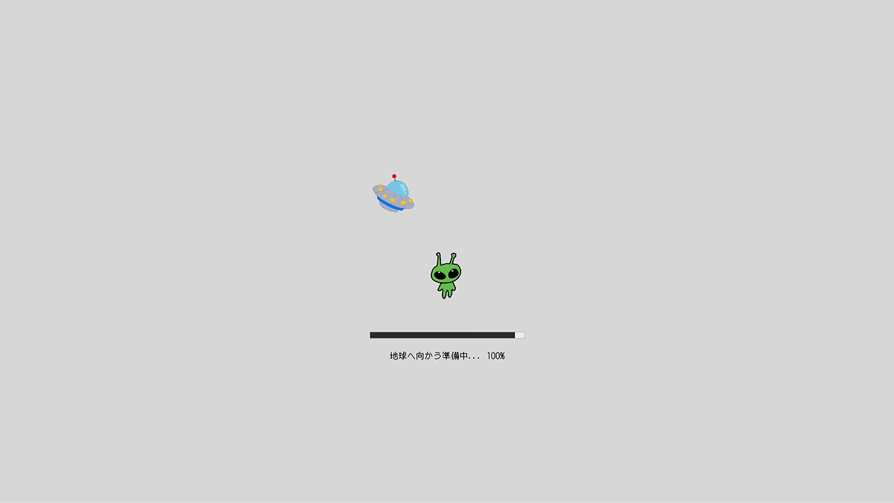
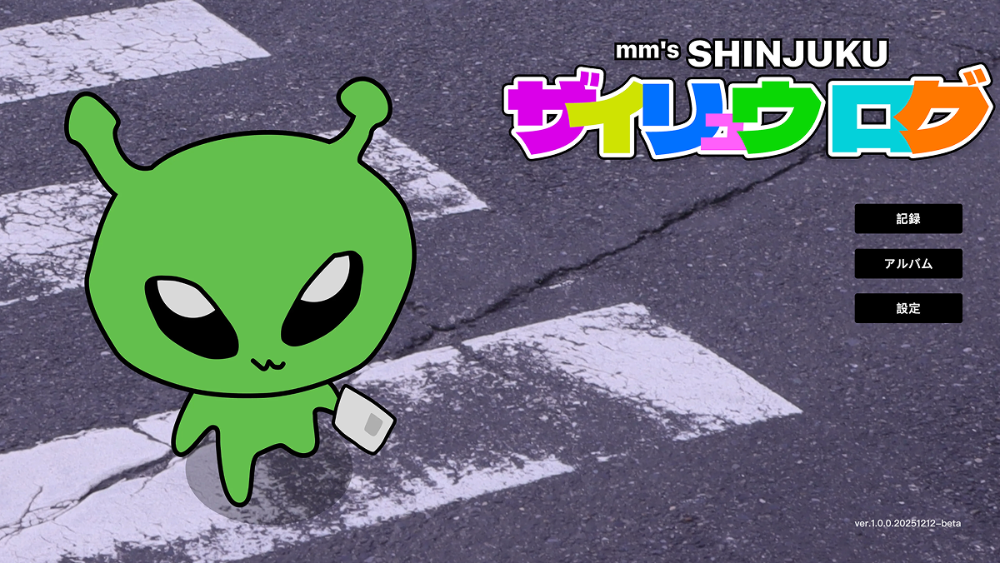
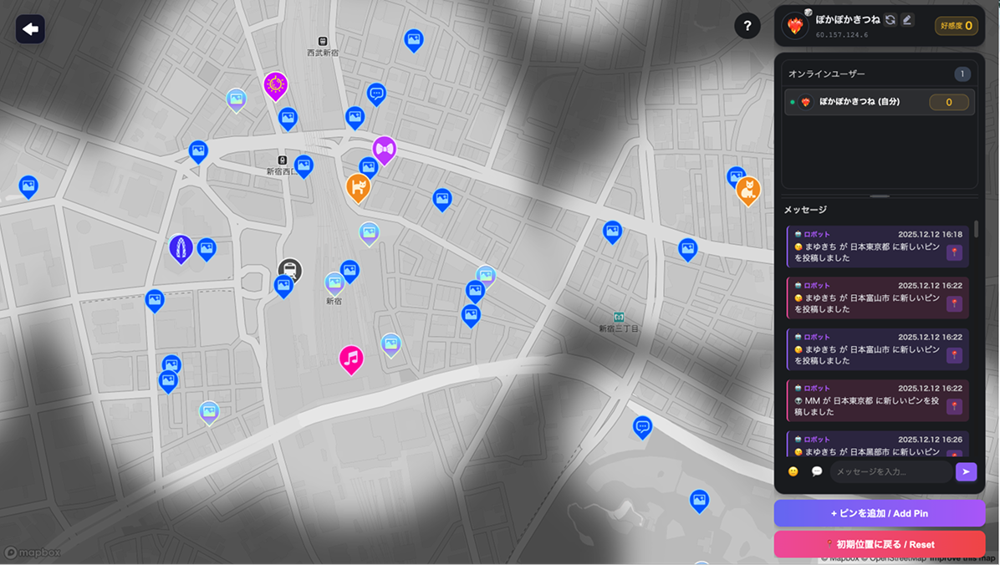
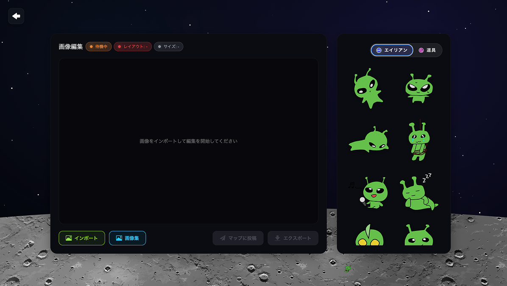
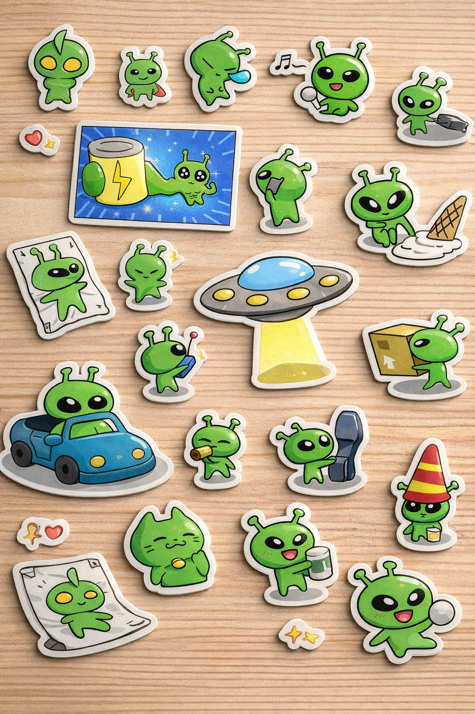

制作プロセス
課題提起
新宿は情報が多く、スポット紹介も「写真＋文章」だけだと単調になりやすい。
発信したい人が他のSNSで投稿しても流れてしまい、見てもらいにくい。
リサーチ
既存のスポット共有サービスやSNSを調査し、どういう投稿が埋もれやすいかを整理。
ターゲット（新宿で生活する人／観光で来る人）が「楽しく参加できる形」を検討。
コンセプト確定
「みんなで参加できる、新宿の情報収集Web」。
見るだけではなく、集めたくなる仕掛けを入れて、街の情報を"遊びながら"増やすことを目標に設定。
情報設計
全体のページ構成と導線を整理し、「どこから参加するか」がすぐ分かるように設計。
情報を見る動線（探索）と、情報を増やす動線（参加）を分離。
画面設計
世界観が伝わるビジュアルを作りつつ、文字量が多くなりすぎないように情報の見せ方を調整。
実装
VSCodeでコーディングし、GitHubで管理。Firebaseを使い、ユーザー参加型の仕組みを実装。
振り返り
1ヶ月という短期間だったので、完成を優先しつつ品質を落とさないように進行。
今後はユーザーテストで「参加しやすさ」「分かりにくい点」を確認して改善したい。
私の役割
企画・コンセプト
キャラクター設定の提案 / 世界観の言語化
UI設計
クイズ部分のUIデザイン
進行サポート
タスク整理 / コミュニケーション橋渡し
学んだこと
技術
Firebaseリアルタイム機能 / チーム開発でのコード管理
デザイン
UI・演出・物語を一つの体験として設計
チーム
企画意図の言語化 / デザインと技術の調整
サイト画面一覧

Loadingページ

ホームページ

マップページ

アルバムページ
仮想の販売物

シール